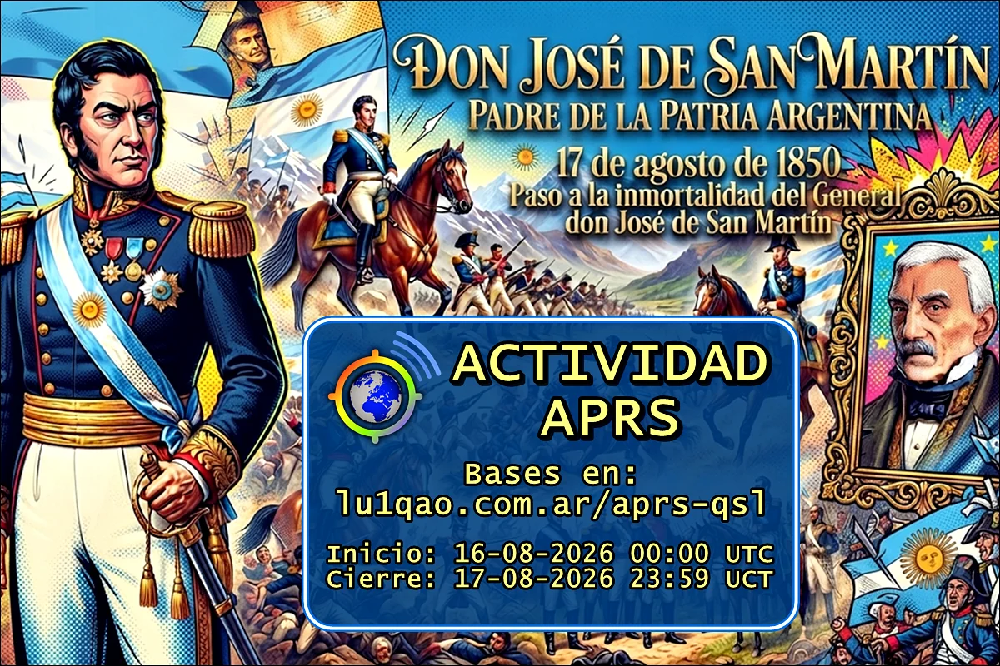

Eventos de LU1QAO
Espacio dedicado al monitoreo de tramas, eventos especiales de rastreo de posición, activaciones climáticas y la gestión tradicional de tarjetas QSL.
Espacio dedicado al monitoreo de tramas, eventos especiales de rastreo de posición, activaciones climáticas y la gestión tradicional de tarjetas QSL.

CQ SANMARTINEl general José de San Martín (1778-1850) fue un militar y político sudamericano, reconocido como el Padre de la Patria en Argentina y uno de los grandes libertadores de América del dominio español.
José Francisco de San Martín y Matorras (Yapeyú, virreinato del Río de la Plata, 25 de febrero de 1778-Boulogne-sur-Mer, Francia, 17 de agosto de 1850) fue un militar y político argentino, conocido como libertador de la Argentina y Chile, y uno de los principales artífices de la emancipación del Perú. Es una de las figuras más trascendentes de las guerras de independencia hispanoamericanas junto a Simón Bolívar.